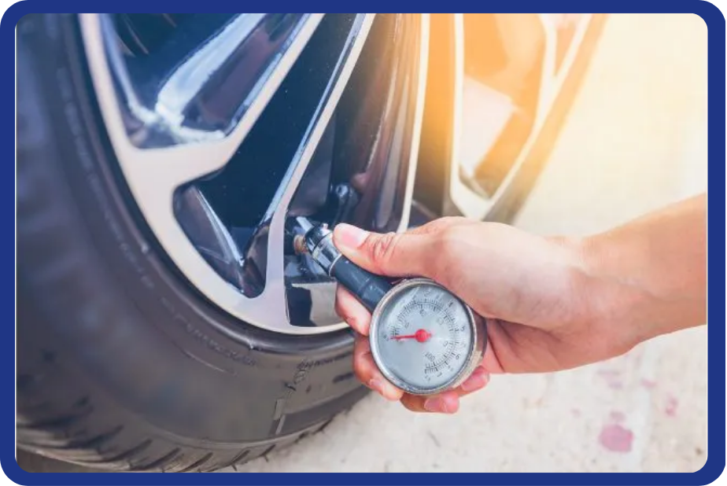

Dispositivo portátil baseado em ESP32 para aferição de pressão dos pneus, com exibição em OLED e opções de PSI/BAR.
Este site reúne: introdução ao problema, componentes utilizados, metodologia (incluindo calibração) e conclusão com custos estimados.
O projeto visa desenvolver um Medidor Digital de Pressão de Pneus utilizando um ESP32 TTGO para garantir confiabilidade e baixo custo. A pressão correta é vital para a segurança veicular, pois otimiza a frenagem e a aderência, além de reduzir o desgaste dos pneus e o consumo de combustível. O uso do ESP32 é estratégico, oferecendo poder de processamento para leituras precisas do sensor de pressão e potencial conectividade (Wi-Fi/Bluetooth) para futuras integrações ou monitoramento sem fio. O foco está na calibração precisa e na apresentação clara dos dados, criando uma ferramenta de manutenção essencial e economicamente viável.
